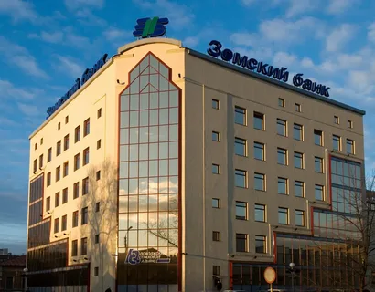

Наш банк | История, структура банка
История банка
Акционерный коммерческий банк "Земский банк" (ЗАО АКБ "Земский банк") зарегистрирован Центральным банком РФ 16 июня 1994 года.
Головной офис банка располагался в Самаре.
В 1996 году общим собранием акционеров банка было принято решение о переводе банка в г. Сызрань.
16 августа 1996 года Главным управлением Центрального банка по Самарской области был утвержден новый юридический адрес банка:
г. Сызрань, ул. Кирова, 46.
Дальнейшие события подтвердили: банк оказался в нужном месте в нужное время. Сделав своим приоритетом реальную экономику,
устранившись от доходных, но рискованных игр на финансовом рынке, Земский банк не только благополучно пережил все экономические
кризисы, но и приобрел новых клиентов, оценивших все преимущества надежности и стабильности.
Усилиями коллектива профессионалов Земский банк стал сегодня финансовым учреждением, которое высоко ценят клиенты и партнеры.
Земский банк сегодня - универсальный региональный банк, предоставляющий полный спектр банковских услуг и активно
применяющий достижения современных технологий.

Клиенты в полной мере ощущают преимущества сотрудничества с региональным банком:
- индивидуальный подход;
- подбор наиболее удобных банковских продуктов;
- заинтересованность в создании длительных и взаимовыгодных отношений;
- оперативность принятия решений.
Юридические лица могут получить полный комплекс услуг по расчетно-кассовому обслуживанию клиентов. "Земский банк"
предлагает юридическим лицам и индивидуальным предпринимателям, разместить денежные средства на
депозитные счета.
А с помощью системы Дистанционное банковские обслуживание», есть возможность, управлять своими финансами в режиме
реального времени. Кредиты, зарплатные проекты, банковские гарантии, торговый эквайринг и услуги инкассации - это далеко
не весь спектр услуг банка.
Для частных лиц банк предлагает вклады в рублях и валюте, различные виды кредитов, в том числе
и ипотека, обмен валюты и денежные переводы, банковские карты, мобильный банк, а также оплату коммунальных и других
платежей. Внедрение банком новых продуктов, новых технологий предоставлением новых инструментов, является чрезвычайно
востребованным у клиентов. О том, что делает Земский банк для Сызрани и Самарской области в целом и ее жителей в
частности, можно говорить много. Огромную поддержку от банка получают спортсмены и творческие коллективы, детские
школы искусств и городские Дома Культуры, медицинские учреждения и общеобразовательные школы, детские сады и
православные храмы.
Структура банка
Полное фирменное наименование банка: Общество с ограниченной ответственностью «Земский банк»
Сокращенное фирменное наименование банка: ООО «Земский банк» Полное фирменное наименование банка на английском
языке: Limited Liability Company «Zemsky bank»
Сокращенное фирменное наименование банка на английском языке: LLC «Zemsky bank»
Основной государственный регистрационный номер (МНС России): 1156300000141
Дата внесения записи о создании кредитной организации в Единый государственный реестр юридических лиц: 20.01.2015 г.
Регистрационный номер, присвоенный Банком России: 2900
Дата регистрации в Банке России: 16.06.1994 г.
Участие в системе обязательного страхования вкладов: Регистрационный № 10 в Книге государственной регистрации кредитных
организаций, дата включения в реестр – 21 сентября 2004г.
Сведения о лицензиях:
Вид: на осуществление банковских операций
Номер 2900
Дата выдачи 20 января 2015г.
Наименование органа, выдавшего лицензию ЦБ РФ.
Cрок действия: без ограничения срока действия
Перечень лицензируемой деятельности:
Банку предоставляется право на осуществление следующих банковских операций со средствами в рублях и иностранной валюте:
- Привлечение денежных средств юридических лиц во вклады (до востребования и на определенный срок);
- Размещение привлеченных во вклады (до востребования и на определенный срок) денежных средств юридических лиц от своего имени и за свой счет;
- Открытие и ведение банковских счетов юридических лиц;
- Осуществление переводов денежных средств по поручению юридических, в том числе банков-корреспондентов, по их банковским счетам;
- Инкассация денежных средств, векселей, платежных и расчетных документов и кассовое обслуживание физических и юридических лиц;
- Купля-продажа иностранной валюты в наличной и безналичной формах;
- Выдача банковских гарантий;
- Осуществление переводов денежных средств без открытия банковских счетов, в том числе электронных денежных средств (за исключением почтовых переводов).
Вид: на осуществление банковских операций
Номер № 2900
Дата выдачи 20 января 2015 г.
Наименование органа, выдавшего лицензию ЦБ РФ
Срок действия: без ограничения срока действия
Перечень лицензируемой деятельности:
Банку предоставляется право на осуществление следующих банковских операций со средствами в рублях и иностранной валюте:
- Привлечение денежных средств физических лиц во вклады (до востребования и на определенный срок);
- Размещение привлеченных во вклады (до востребования и на определенный срок) денежных средств физических лиц от своего имени и за свой счет;
- Открытие и ведение банковских счетов физических лиц.
Осуществление переводов денежных средств по поручению физических лиц по их банковским счетам
Вид: на осуществление разработки, производства, распространения шифровальных (криптографических) средств, информационных систем и телекоммуникационных систем, защищенных с использованием шифровальных (криптографических) средств, выполнение работ, оказание услуг в области шифрования информации, техническому обслуживанию шифровальных (криптографических) средств, информационных систем и телекоммуникационных систем, защищенных с использованием шифровальных (криптографических) средств (за исключением случая, если техническое обслуживание шифровальных (криптографических) средств, информационных систем и телекоммуникационных систем, защищенных с использованием шифровальных (криптографических) средств, осуществляется для обеспечения собственных нужд юридического лица или индивидуального предпринимателя).
Номер №2436
Дата выдачи 18 мая 2015г.
Наименование органа, выдавшего лицензию УФСБ России по Самарской области.
Срок действия: без ограничения срока действия
Перечень лицензируемой деятельности: Банку предоставляется право на осуществление видов работ (услуг), выполняемых
(оказываемых) в составе лицензируемого вида деятельности, в соответствии с частью 2 статьи 12 Федерального закона
«О лицензировании отдельных видов деятельности»:
Работы, предусмотренные пунктами 11-14, 20-28 Перечня выполняемых работ и оказываемых услуг, составляющих лицензируемую
деятельность в отношении шифровальных (криптографических) средств, являющегося приложением к Положению, утверждённому
постановлением Правительства РФ от 16 апреля 2012 года №313.